Reports with a Visual PDF Signature
This tutorial describes how to create a report with a visual PDF signature.
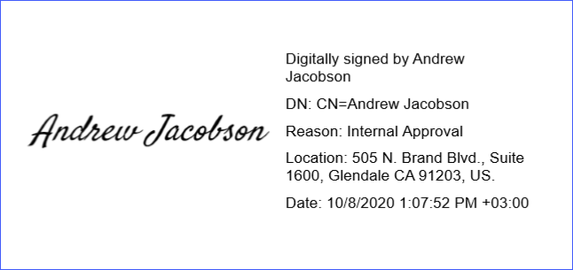
Create a Report Layout
Drop the RichText control from the report controls Toolbox tab onto the Detail band.
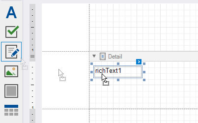
Double-click the control and insert the DevExpress Website Terms of Use text.
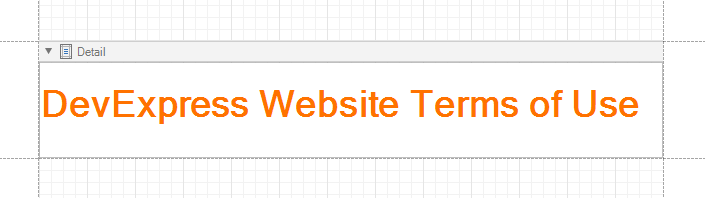
Right-click the design surface. Select Insert Band / ReportFooter from the context menu. Enable the footer band's Print at Bottom property.
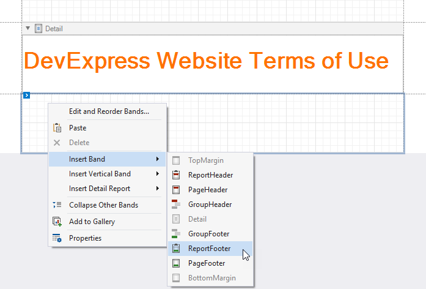
Drop the PdfSignature control from the report controls Toolbox tab onto the Report Footer band.
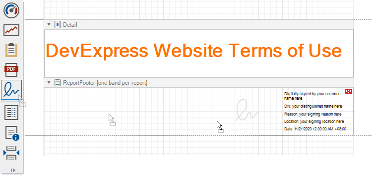
Place the Label control to the left of the PdfSignature control and add the following text: I have read and accept this Website Terms of Use statement.
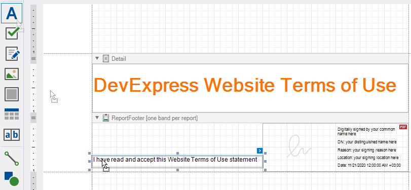
Click the Preview Tab to show the result.
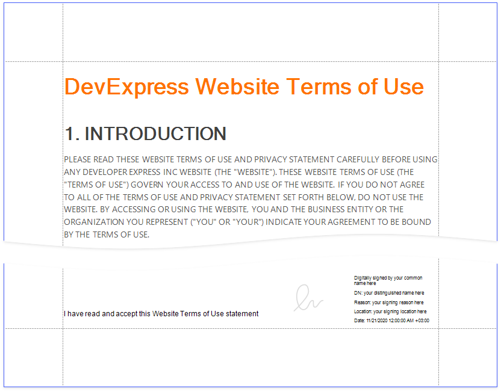
Export and Sign the Report
In Preview, click Export Document and select PDF File.
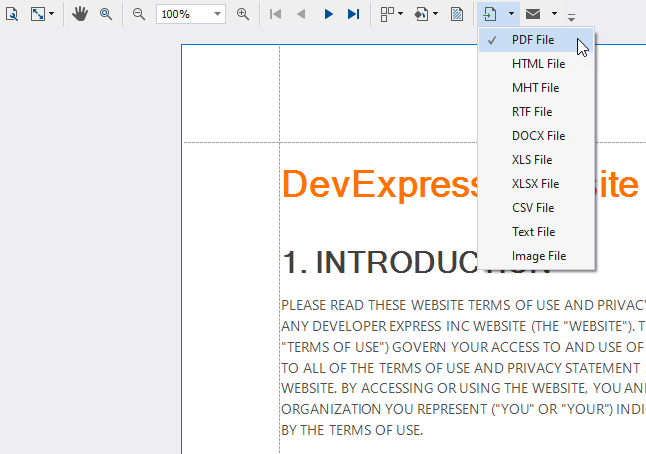
In the invoked PDF Export Options dialog, click the Digital Signature option's ellipsis button.
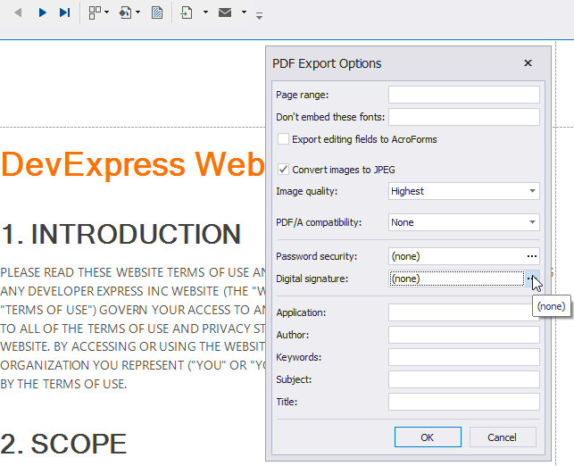
In the invoked Signature Options dialog, choose a certificate and specify signature details.
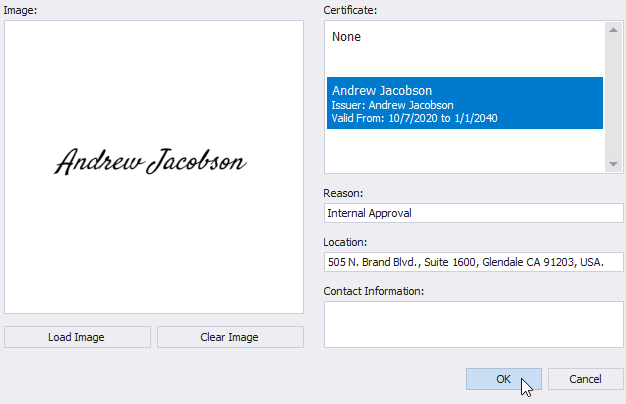
Save and open the document to show the final result.
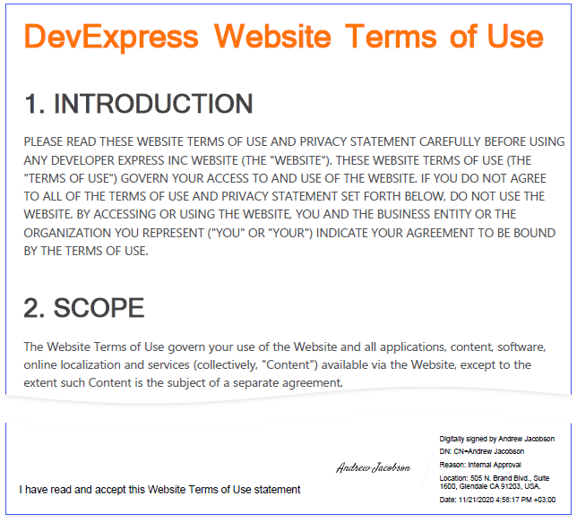